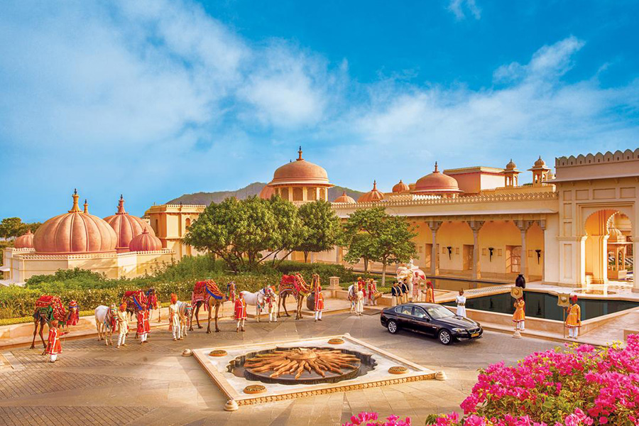
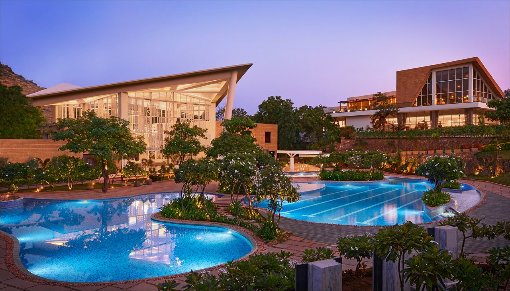
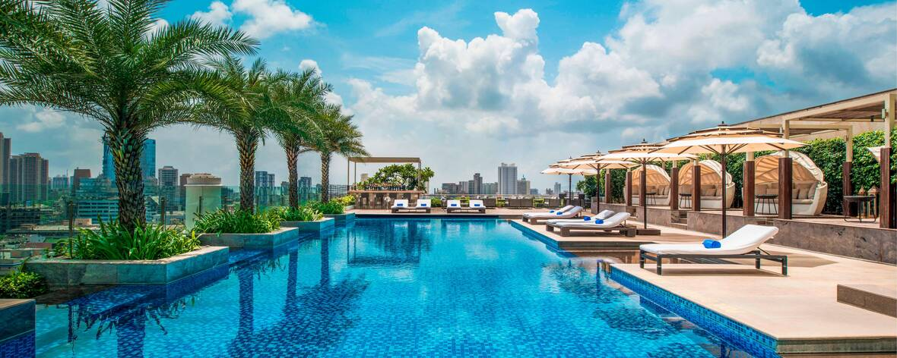

Rising like a mirage from Lake Pichola, the white-marble-and-mosaic Taj Lake Palace beckons to travelers.
The palace itself dates back to 1746, when it was built by Maharana Jagat Singh II.
Today, guests are treated like royalty by an entourage of palace butlers who ensure that every creature comfort is provided.
The Jiva Spa draws rich idioms from millennia-old Indian wellness and healing therapies, resulting in a menu of aromatherapy massages, body scrubs and wraps that are sure to rejuvenate even the weariest body.
From mid-October to mid-April, the hotel’s rooftop Bhairo restaurant is open and serves contemporary European cuisine with spectacular palace lake and views.

THE OBEROI UDAIVILAS, UDAIPUR
The phenomenal Oberoi Udaivilas is spread over 50 acres on the banks of Lake Pichola, on the 200-year-old hunting grounds of the Maharana of Mewar.
The resort offers unique experiences that include private lakeside dining, traditional boat rides, private cooking sessions and fun activities for children.
The indoor and alfresco restaurants have lake and garden views, and serve fine international and Indian cuisine, while the spa offers signature Oberoi treatments.
I recommend to opt for a suite with a private pool, or for a premier room with comes with direct access to a unique 240 ft (73 m) long semi-private pool and a bath tub with uninterrupted lake views.

TAJ ARAVALI RESORT & SPA
A luxury haven in the princely state of Mewar, Taj Aravali is unequivocally a destination unto itself.
It’s surrounded by the serene Aravali ranges and is located near to the beautiful Fateh Sagar Lake.
The contemporary design of the resort is a masterpiece of Rajasthani Architecture with furnishings inspired by Mewar’s equestrian heritage.
From the ornate marble flooring to elaborate chandeliers, every part of the resort is designed to perfection.
All 176 rooms, suites, and luxury tents are equipped with modern amenities to take care of every need.

THE ST. REGIS MUMBAI
Located in the premier commercial and entertainment hub of Mumbai, St Regis is a luxurious 5-star hotel by the Marriott group.
It is situated in Mumbai’s tallest building in Lower Parel and overlooks the Arabian sea.
The 395 guest rooms including the ultra-luxurious suites are thoughtfully designed to make you feel at home.
It gives you an option to choose your room with a gorgeous city view, skyline or the sea view.
Prices for St. Regis, Mumbai, one of the best hotels in India, starts at USD $165++ per night.